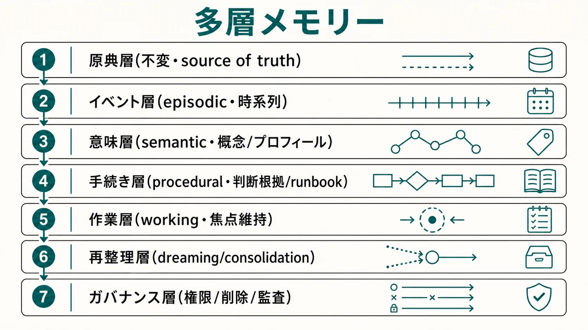
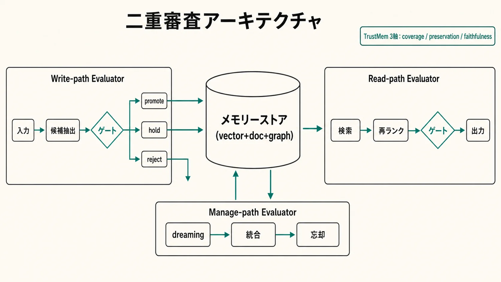
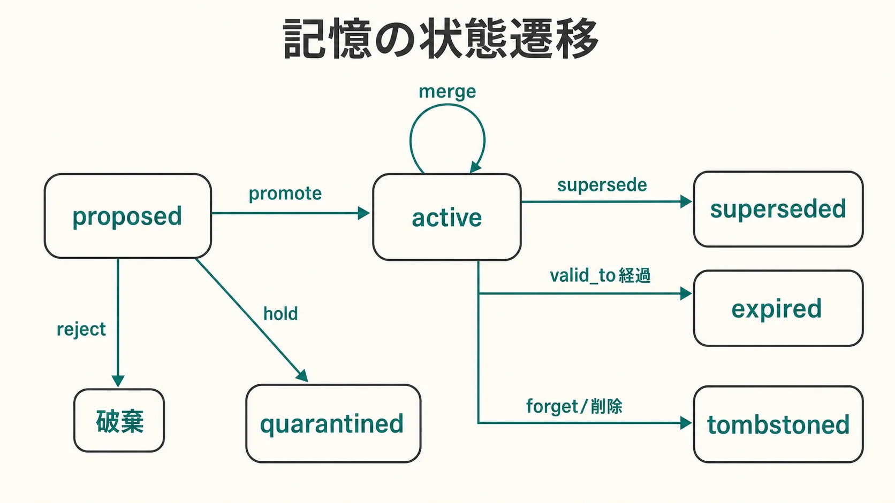
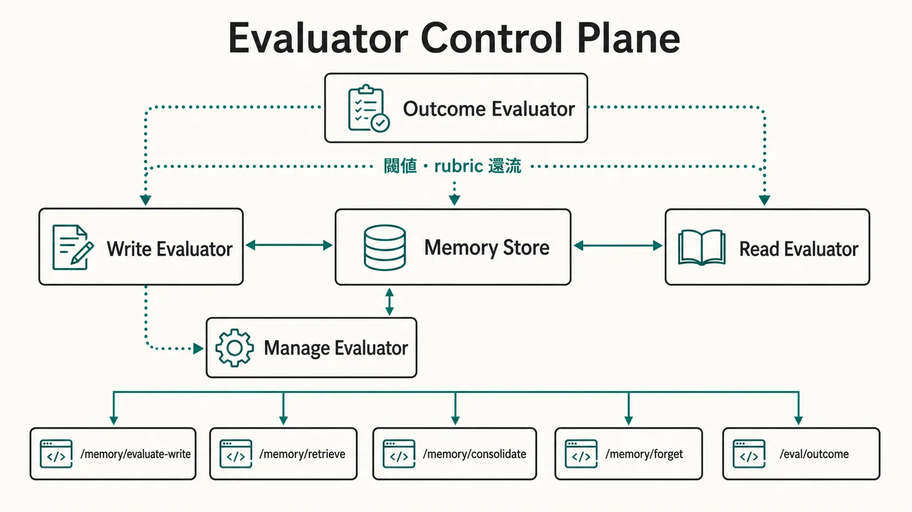

原典層
会話ログ、ファイル、Webクリップ、議事録、ツール実行履歴。不変に近い source of truth として扱い、dreaming や要約で上書きしない。Karpathy の LLM Wiki における raw sources に相当。
raw sourceHarness research synthesis 3 of 3
長期記憶を、保存容量やベクトル検索の問題ではなく、write / manage / read の各経路で「評価された更新」と「評価された再利用」を行う制御面（control plane）として整理する。中心部品はベクトルDBでもノート金庫でもなく、Evaluator を内包した記憶の制御面である。
2025年から2026年にかけて、AIエージェントのメモリー論点は「外部ストアをどう持つか」から、「何を抽出し、どう統合し、いつ忘れ、どの範囲で安全に使うか」へ移った。LongMemEval や LoCoMo が示すように、長いコンテキストや商用チャット履歴だけでは、複数セッション・時間推論・知識更新・abstention を安定して扱えない（LongMemEval は持続的対話で約30%の精度低下を報告）。したがって長期記憶は RAG の read 経路だけでは不十分で、write 経路で「何を記憶に昇格させるか」を、manage 経路で「統合・期限切れ・dreaming・忘却」を、read 経路で「検索結果の鮮度・権限・矛盾・機微性」を、それぞれ査定する必要がある。
本ページは調査 md の主張を、ソースの確信度区分どおりに保持する。プラットフォーム挙動の一部は一次公式ドキュメントで裏取りできておらず、そのまま「未確認」と明示する。
最有望なのは単一ストア方式ではなく、記憶対象ごとに別の表現・別の更新則・別の検索則を持つ多層メモリーである。単一のベクトルストアに全部入れる方式は構築が簡単な代わりに、時間更新・意思決定履歴・削除・権限制御・再整理のどこかで詰まる。少なくとも次の層を分け、各層に違う保存・更新・削除ルールを与える。

会話ログ、ファイル、Webクリップ、議事録、ツール実行履歴。不変に近い source of truth として扱い、dreaming や要約で上書きしない。Karpathy の LLM Wiki における raw sources に相当。
raw source誰が・いつ・何をしたかを持つ時系列。セッション、主体、順序、因果、更新関係を保持する（episodic memory）。
episodic事実、概念、プロフィール、エンティティ、関係の統合表現（semantic memory）。concept card、structured profile、knowledge graph に向く。
semantic判断根拠、失敗理由、runbook、進捗、ルール、AGENTS.md、SKILL.md（procedural memory）。再実行と検証に効く decision log。
procedural今のタスクに必要な短期コンテキスト（working memory）。永続化より焦点維持を優先し、compaction 時に外部化する。
workingDreaming / sleep-time compute / retrospective reflection。重複統合、矛盾解消、陳腐化置換、リンク付け、洞察生成を行う。
consolidation権限、削除、監査、provenance、poisoning 対策を担う。共有メモリーでは不可欠で、この層が無いと長期記憶は法務・セキュリティ・監査の抜けになる。
governance| 記憶対象 | 推奨層 / 記憶型 | write 判定の要点 | forget 則 | read 重みの傾向 |
|---|---|---|---|---|
| 普遍的知識・抽象概念 | 意味(reference) | grounding 重視、supersede で版管理 | ほぼ不忘、陳腐化のみ | authority 高 |
| 雑学的情報 | 意味(auxiliary) | 低 salience、promote 閾値高め・寒冷層へ | stale で積極 forget | relevance 依存・freshness ほぼ0 |
| 意思決定プロセス | 手続き（＋イベント） | 結論でなく試行・失敗理由・切替理由を decision trace として残す | supersede 中心 | policy_fit・authority 高 |
| 抽象概念（表現） | 意味・グラフ | 概念ノード・関係を持つ symbolic / graph 表現が扱いやすい | 陳腐化のみ | GraphRAG・entity expansion |
| イベントごとの記憶 | イベント・時間 | 時刻・継続期間・主体・因果・valid_to を保持 | 要約後に原ログ圧縮/期限 | freshness・時間近接 |
Obsidian や Basic Memory のようなファイルベース記憶は、可搬性・人間可読性・Git 相性で優れた「表示・編集・持ち運び層」だが、それ自体は長期記憶の最終回答ではない。時間更新・多段推論・abstention は全文/埋め込み検索だけでは弱く、Karpathy のパターンでも lint pass が必須で、放置するとページが静かに古くなる。原典保持・抽出・構造化・時間解釈・差分更新・再整理・監査ログを足して初めて記憶基盤になる。
最新研究の合意点は明快だ。「すべてを保存する」のではなく、「保存候補を生成し、Evaluator が昇格・更新・削除・保留を判断し、検索時にも再評価をかける」二重審査型アーキテクチャが要る。書き込み時（write）と読み出し時（read）の両方に査定ゲートを置き、その間を背景処理（manage）が再編する。

| 経路 | Evaluator の問い | Verdict |
|---|---|---|
| write-path | この候補記憶を本採用してよいか。根拠・矛盾・新規性・機微性はどうか。 | promote / hold / reject / merge / supersede |
| manage-path | 統合・要約・dreaming・忘却・削除をしてよいか。原典を壊していないか。 | merge / summarize / expire / forget / tombstone |
| read-path | この記憶を今このタスクで使ってよいか。新しいか・権限内か・矛盾していないか。 | retrieve / drop / 再ランク |
| outcome | 記憶利用によりタスクが改善したか。古い記憶や汚染記憶を使わなかったか。 | continue / stop / policy update |
write 判定は「新規性・根拠・矛盾」の三軸を基礎に、TrustMem の遷移三軸を統合の安全弁として重ねる。要点は、preservation が低い統合（既存の有用情報を捨てる merge / supersede）は、スコアが高くても却下側に倒すことだ。
| 主条件 | 判定 | 理由 |
|---|---|---|
| 新規性高・根拠強・矛盾低 | promote | 素直に採用 |
| 新規性低・同一エンティティ・preservation 十分 | merge | 重複統合 |
| 矛盾高・候補が新鮮・根拠強・faithfulness 十分 | supersede | 版更新（旧版は superseded へ） |
| 根拠薄 / 未検証 | hold | quarantine で保留 |
| ほぼ重複 / 無意味 | reject | 破棄 |
promote_threshold を一段上げ、多くを quarantine に落として manage 経路（dreaming）へ昇格判断を先送りするのが安全だ。
三経路の Evaluator はすべて記憶アイテムのメタデータを判断材料にする。これらを第一級フィールド（本文と同格に保存・索引する属性）として持たせないと、Evaluator は relevance しか見られず、鮮度・矛盾・権限・時間有効性を判断できない。
| フィールド | 意味 | 主に効く経路 |
|---|---|---|
provenance | 出所（source_id, trust_level） | write（grounding）・削除権 |
salience | 重要度・再利用価値 | write・manage |
freshness | 鮮度（時間減衰） | read・manage |
contradiction_risk | 既存記憶との矛盾度 | write・read |
sensitivity | 機微度・アクセス制御 | read（hard gate）・削除・HITL |
scope_id | user / agent / session / org の所属 | 全経路の hard gate |
valid_from / to | 時間有効期間（durative） | read・manage（expire） |
status | 下の状態機械の状態 | 全経路 |
良い長期記憶は追記専用ではない。更新・再統合・削除・保留を伴うため、物理削除でなく状態遷移にして監査証跡（MEMORY_VERSION）を残す。

検索は relevance に加え freshness・authority・policy fitness を合成した再ランクが必要で、スコア計算の前に hard gate で候補を除外する。quarantine 状態を通常検索から隠すことが、poisoning された候補が本採用前に使われるのを防ぐ実質的防御になる。
final_score =
w_relevance * relevance
+ w_freshness * freshness
+ w_authority * authority
+ w_policy * policy_fit
- w_contradiction * contradiction_risk
# スコア計算前の hard gate（先に候補を除外）
hard gates: scope mismatch / quarantined / superseded /
tombstoned / expired / sensitivity > 権限
# 重み w は task_type で可変
# 事実質問 → authority・freshness を重く
# ブレスト → relevance を重く| リスク | 防御 | Evaluator の役割 |
|---|---|---|
| memory poisoning | 低 trust の provenance、急な方針転換、権威記憶との矛盾を quarantine へ | write-path が第一防衛線。promote しない |
| stale memory | valid_to・freshness・superseded・FAMA 的指標 | read で落とし、manage で tombstone |
| 機微情報漏えい | sensitivity label、scope hard gate、高権限 retrieval 分離 | read で通常検索から除外 |
| 削除権（GDPR 等）不履行 | source lineage を辿り、要約・concept card・グラフエッジまで連鎖 tombstone | manage で派生記憶まで追跡 |
| Goodhart / judge 甘化 | 採点経路の封印、gold set、meta-evaluator、human agreement | outcome / meta で judge を監査 |
(1) write-gate が第一防衛線。 低 trust の provenance・根拠なき方針転換・権威記憶との急な矛盾は promote せず quarantine に落とす。特に compaction bulk ingest 時にこのゲートが効く。
(2) dreaming は原典を上書きしない。 これは絶対原則だ。Karpathy の LLM Wiki は raw sources を不変の真実源に置き、LLM が保守するのは wiki 層だけと分離した。OpenAI・Anthropic・Letta が dreaming を導入しても原典ログ・レビュー可能サマリー・セッションログを残すのはこのためだ。manage-path Evaluator の役割は「dreaming の出力を新規の派生記憶として promoteすること」であって、原典の tombstone は別の human / policy ゲートに回す。
(3) 削除は source lineage の連鎖で行う。 OpenAI Memory FAQ は「完全に消すには summary だけでなく関連チャット・ファイル・接続アプリなど出所すべてから削除が必要」と述べる。memory item 単体の削除では不十分で、SOURCE → MEMORY_ITEM → MEMORY_VERSION の lineage を辿り、派生記憶（要約・concept card・グラフエッジ）まで連鎖 tombstone する。dreaming 由来の派生にも lineage タグを付け、原典削除時に芋づる式に無効化できるようにする。高リスク削除・共有スコープの昇格には human approval を要求する。
確認済み 本プロジェクトでも ~/.claude/projects/<project>/memory/ に MEMORY.md（Memory Index）が実在し、1件1ファイル・索引参照でオンデマンドに読む方式が採られている（本セッションのシステムコンテキストで実在を確認）。高確度 資料は Claude Code の memory tool をファイルベースで create / read / update / delete でき、MEMORY.md を起点に必要な情報だけを読む設計だと記述する（公式一次は未検証）。
evaluate_write を通し、promote のみ memory/ 直下に実ファイル化、hold は memory/_quarantine/ へ隔離、reject は書かない。.claude/settings.json の Write 系フック点で memory 配下の書き込みを捕捉するのが素直。未確認 hook 連携の具体イベント名は設計案（要実機確認）。MEMORY.md の索引エントリに freshness / authority / status / scope を frontmatter で持たせ、本文をオンデマンドに読む前に read_rank で並べ替える。final_score 上位のみ読む方針はコンテキスト予算の節約とも相性がよい。command hook は安全ゲートに使わない（同期＝ブロック可 / 非同期＝記録専用の配置原則）。非同期からの通知が要る場合は文書化された asyncRewake を使う高確度（「additionalContext を次ターンへ返せるがブロック権限を失う」という I/F 整理は未確認）。
MEMORY.md 構成では、第一級メタデータ数個 ＋ write ゲート1つ ＋ read 再ランクで足りることが多い。10エンティティのフル ER・dreaming・source-lineage tombstone・独立 control plane 化は、中期／長期の大規模システム向けであり、少数の MEMORY.md エントリに全機構を作り込まない。
write / manage / read / outcome の4評価点は、別々のコードでなく一つの Evaluator 抽象の4インスタンスとして書く。全評価点が同じ Verdict 契約（{decision, score, reason, next_direction}）を返すため、rubric・閾値・監査ログの取り回しが統一でき、in-proc（関数呼び出し）から独立 control plane サービスへの切り出しが評価点ごとに段階適用できる。統合ビュー（design 全体）はこちら → Evaluator ハーネス設計（04）。

| エンドポイント | 経路 | 返す Verdict.decision |
|---|---|---|
POST /memory/evaluate-write | write | promote / hold / reject / merge / supersede |
POST /memory/retrieve | read | read-eval 後の ranked hits |
POST /memory/consolidate | manage | 統合・要約結果 |
POST /memory/forget | manage | forget（tombstone） |
POST /eval/outcome | outcome | continue / stop ＋ policy delta |
各呼び出しは trace_id で observability と audit trail に接続し、記憶の採否・削除・stale 防止の履歴を回収する。Evaluator を interface 境界に切れば、ローカル関数とリモートサービスを差し替えられる。
記憶更新を査定する judge は、TrustMem 型にcoverage・preservation・faithfulnessを transition（遷移）単位で採点し、transition-level reward として扱う。ただし judge は「置けば終わり」ではない。judge 自身が position / verbosity / self-enhancement bias を持ち、drift し、報酬ハッキングの標的になるため、meta-evaluator を常設する。
| 点検軸 | 何を測るか | 運用の考え方 |
|---|---|---|
| human agreement | gold set（人間確定ラベル数十件）との一致率 | 高リスク judge ほど高く要求（例: 0.9+） |
| inter-run consistency | 同一入力の再現性 | 低いなら temperature 低減・多数決化・rubric 明確化 |
| false accept / reject | 不良を通す / 良品を弾く | false accept（不良通過）を重く扱い安全側へ |
| false promotion rate | 誤って本採用する率（記憶固有） | write 閾値の調整対象。TrustMem 遷移で回収 |
| drift | 上記の時系列劣化 | 変化点で rubric 再調整または決定論チェックへ降格 |
| 段階 | 記憶設計 | Evaluator 設計 | 停止 / 監視条件 |
|---|---|---|---|
| 短期 | 既存 vector DB または Markdown 記憶に provenance・time・scope・freshness を付ける | write evaluator を1つ挟み、根拠薄は hold（quarantine）へ送る | false promotion rate を観測し閾値を調整 |
| 中期 | semantic / episodic / procedural を分離し、event graph や GraphRAG を部分導入 | write / manage / read を分け、stale reuse rate と merge correctness を見る | memory growth・stale reuse・contradiction persistence を監視 |
| 長期 | dreaming・reconsolidation・learned forgetting・policy substrate を持つ | control plane サービス化し、trace_id で監査と eval を接続 |
meta-evaluator が judge drift・false accept・human agreement を定期点検 |
MEMORY.md 構成では短期の最小経路（第一級メタデータ数個 ＋ write ゲート1つ ＋ read 再ランク）で足りる。フル ER・dreaming・source-lineage tombstone・独立 control plane 化は中期／長期の大規模システムでのみ段階導入する。「必要になったとき参照する上限側の地図」として読み、初手は最小経路から入る。
本ページは以下の一次ソース md と design/ を素材にした再構成である。引用マーカーの外部解決は行っていない。プラットフォーム挙動の未確認項目は本文の「未確認」バッジで明示した。実装時は該当プロダクトの最新公式仕様を確認すること。
| 資料 | 本ページでの反映先 |
|---|---|
| 04-agent-long-term-memory.md | 1章（問題設定・用語限界）、2章（多層メモリー・5分類・Obsidian/LLM Wiki の位置づけ）、5章（dreaming は原典不変・削除権） |
| 05-long-term-memory-and-evaluators.md | 3章（write–manage–read 二重審査・参照アーキ）、4章（第一級メタデータ・ER）、6章（API 5系統・ベンチマーク） |
| design/04-memory-path-evaluators.md（★中心） | 3章（write/manage/read 判定則・TrustMem 3軸）、4章（第一級メタデータ・status 状態機械・read 再ランク）、5章（poisoning 第一防衛・source lineage 連鎖削除・Claude Code memory 噛ませ方・比例性） |
| design/06-reference-implementation.md（○部分） | 6章（Evaluator 抽象・Verdict 契約・control plane 化・記憶 API 5系統・状態機械／ER） |
| design/05-reliability-and-meta-evaluation.md（○部分） | 6章（記憶 judge の TrustMem 3軸・meta-evaluator・A/B 入替・採点経路封印・Goodhart 対策） |
| 04-evaluator-harness-design.html | design パッケージ全体の統合ビュー（5章・6章から相互参照） |